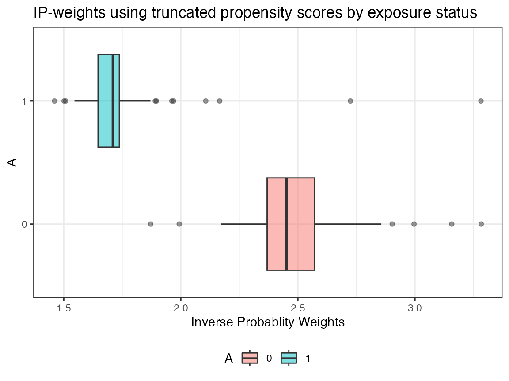
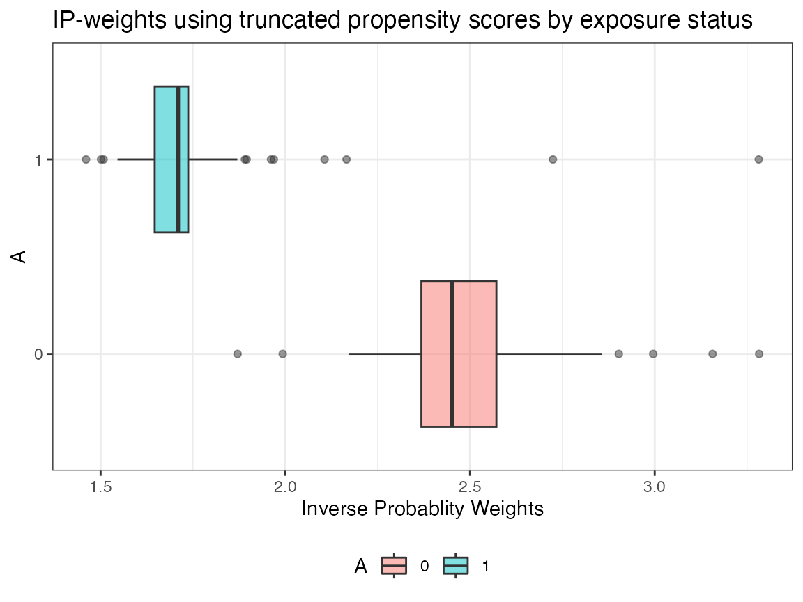
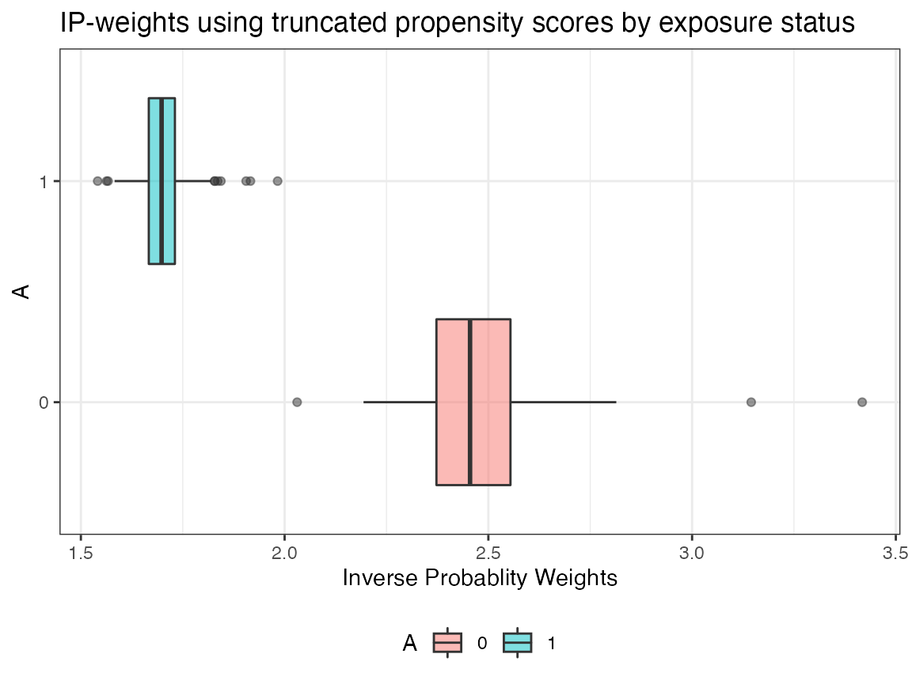

Contents:
Installation
- Install AIPW from CRAN or GitHub
# CRAN version
install.packages("AIPW")
# github version
# install.packages("remotes")
# remotes::install_github("yqzhong7/AIPW")* CRAN version only supports SuperLearner and tmle. Please install the Github version (master branch) to use sl3 and tmle3.
- Install SuperLearner or sl3
#SuperLearner
install.packages("SuperLearner")
#sl3
remotes::install_github("tlverse/sl3")
install.packages("Rsolnp")Input data for analyses
library(AIPW)
library(SuperLearner)
#> Loading required package: nnls
#> Loading required package: gam
#> Loading required package: splines
#> Loading required package: foreach
#> Loaded gam 1.20
#> Super Learner
#> Version: 2.0-28
#> Package created on 2021-05-04
library(ggplot2)
set.seed(123)
data("eager_sim_obs")
cov = c("eligibility","loss_num","age", "time_try_pregnant","BMI","meanAP")Using AIPW to estimate the average treatment effect
One line version (Method chaining from R6class)
Using native AIPW class allows users to define different covariate sets for the exposure and the outcome models, respectively.
AIPW_SL <- AIPW$new(Y= eager_sim_obs$sim_Y,
A= eager_sim_obs$sim_A,
W= subset(eager_sim_obs,select=cov),
Q.SL.library = c("SL.mean","SL.glm"),
g.SL.library = c("SL.mean","SL.glm"),
k_split = 10,
verbose=FALSE)$
fit()$
#Default truncation is set to 0.025; using 0.25 here is for illustrative purposes and not recommended
summary(g.bound = c(0.25,0.75))$
plot.p_score()$
plot.ip_weights() 

A more detailed tutorial
1. Create an AIPW object
Use SuperLearner libraries
library(AIPW)
library(SuperLearner)
#SuperLearner libraries for outcome (Q) and exposure models (g)
sl.lib <- c("SL.mean","SL.glm")
#construct an aipw object for later estimations
AIPW_SL <- AIPW$new(Y= eager_sim_obs$sim_Y,
A= eager_sim_obs$sim_A,
W= subset(eager_sim_obs,select=cov),
Q.SL.library = sl.lib,
g.SL.library = sl.lib,
k_split = 10,
verbose=FALSE)-
Use sl3 libraries
Metalearner is required to combine the estimates from stacklearner!
library(AIPW)
library(sl3)
##construct sl3 learners for outcome (Q) and exposure models (g)
lrnr_glm <- Lrnr_glm$new()
lrnr_mean <- Lrnr_mean$new()
#stacking two learner (this will yield estimates for each learner)
stacklearner <- Stack$new(lrnr_glm, lrnr_mean)
#metalearner is required to combine the estimates from stacklearner
metalearner <- Lrnr_nnls$new()
sl3.lib <- Lrnr_sl$new(learners = stacklearner,
metalearner = metalearner)
#construct an aipw object for later estimations
AIPW_sl3 <- AIPW$new(Y= eager_sim_obs$sim_Y,
A= eager_sim_obs$sim_A,
W= subset(eager_sim_obs,select=cov),
Q.SL.library = sl3.lib,
g.SL.library = sl3.lib,
k_split = 10,
verbose=FALSE)If outcome is missing, analysis assumes missing at random (MAR) by estimating propensity scores with I(A=a, observed=1). Missing exposure is not supported.
2. Fit the AIPW object
This step will fit the data stored in the AIPW object to obtain estimates for later average treatment effect calculations.
#fit the AIPW_SL object
AIPW_SL$fit()
# or you can use stratified_fit
# AIPW_SL$stratified_fit()3. Calculate average treatment effects
Estimate the ATE with propensity scores truncation
#estimate the average causal effects from the fitted AIPW_SL object
AIPW_SL$summary(g.bound = 0.25) #propensity score truncation Check the balance of propensity scores and inverse probability weights by exposure status after truncation

AIPW_SL$plot.ip_weights()
4. Calculate average treatment effects among the treated/controls
stratified_fit()fits the outcome model by exposure status whilefit()does not. Hence,stratified_fit()must be used to compute ATT/ATC (Kennedy et al. 2015)
suppressWarnings({
AIPW_SL$stratified_fit()$summary()
})Parallelization with future.apply
In default setting, the AIPW$fit() method will be run sequentially. The current version of AIPW package supports parallel processing implemented by future.apply package under the future framework. Before creating a AIPW object, simply use future::plan() to enable parallelization and set.seed() to take care of the random number generation (RNG) problem:
# install.packages("future.apply")
library(future.apply)
plan(multiprocess, workers=2, gc=T)
set.seed(888)
AIPW_SL <- AIPW$new(Y= eager_sim_obs$sim_Y,
A= eager_sim_obs$sim_A,
W= subset(eager_sim_obs,select=cov),
Q.SL.library = sl3.lib,
g.SL.library = sl3.lib,
k_split = 10,
verbose=FALSE)$fit()$summary()
Use tmle/tmle3 fitted object as input
AIPW shares similar intermediate estimates (nuisance functions) with the Targeted Maximum Likelihood / Minimum Loss-Based Estimation (TMLE). Therefore, AIPW_tmle class is designed for using tmle/tmle3 fitted object as input. Details about these two packages can be found here and here. This feature is designed for debugging and easy comparisons across these three packages because cross-fitting procedures are different in tmle and tmle3. In addition, this feature does not support ATT outputs.
1. tmle
As shown in the message, tmle only support cross-fitting in the outcome model.
# install.packages("tmle")
library(tmle)
library(SuperLearner)
tmle_fit <- tmle(Y=eager_sim_obs$sim_Y,
A=eager_sim_obs$sim_A,
W=eager_sim_obs[,-1:-2],
Q.SL.library=c("SL.mean","SL.glm"),
g.SL.library=c("SL.mean","SL.glm"),
family="binomial",
cvQinit = TRUE)
cat("\nEstimates from TMLE\n")
unlist(tmle_fit$estimates$ATE)
unlist(tmle_fit$estimates$RR)
unlist(tmle_fit$estimates$OR)
cat("\nEstimates from AIPW\n")
a_tmle <- AIPW_tmle$
new(A=eager_sim_obs$sim_A,Y=eager_sim_obs$sim_Y,tmle_fit = tmle_fit,verbose = TRUE)$
summary(g.bound=0.025)
2. tmle3
Notably, tmle3 conducts cross-fitting and propensity truncation (0.025) by default.
# remotes::install_github("tlverse/tmle3")
library(tmle3,quietly = TRUE)
library(sl3,quietly = TRUE)
node_list <- list(A = "sim_A",Y = "sim_Y",W = colnames(eager_sim_obs)[-1:-2])
or_spec <- tmle_OR(baseline_level = "0",contrast_level = "1")
tmle_task <- or_spec$make_tmle_task(eager_sim_obs,node_list)
lrnr_glm <- make_learner(Lrnr_glm)
lrnr_mean <- make_learner(Lrnr_mean)
sl <- Lrnr_sl$new(learners = list(lrnr_glm,lrnr_mean))
learner_list <- list(A = sl, Y = sl)
tmle3_fit <- tmle3(or_spec, data=eager_sim_obs, node_list, learner_list)
cat("\nEstimates from TMLE\n")
tmle3_fit$summary
# parse tmle3_fit into AIPW_tmle class
cat("\nEstimates from AIPW\n")
a_tmle3<- AIPW_tmle$
new(A=eager_sim_obs$sim_A,Y=eager_sim_obs$sim_Y,tmle_fit = tmle3_fit,verbose = TRUE)$
summary(g.bound=0)